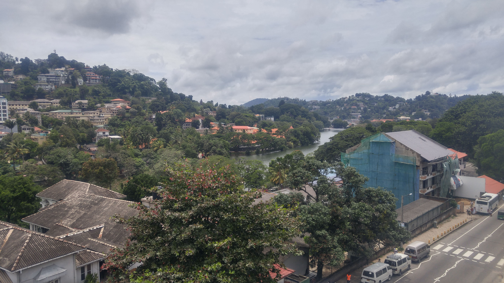

Go Back
Kandy

Kandy is a major city in central Sri Lanka. It was the last capital city of the ancient king's era in Sri Lanka. The city is nestled in lush hills near many tropical plantations, mainly tea. Kandy is the home of the Temple of the Tooth Relic (Sri Dalada Maligawa), one of the most sacred places of worship in the Buddhist world. It was declared a world heritage site by UNESCO in 1988. Kandy is one of the most beautiful cities I've been to. There is vegetation everywhere and it's quite common to see monkeys swinging around from the trees in the city. It's also sometimes referred to as the cultural heart of Sri Lanka and offers some of the most authentic Sri Lankan experiences in the whole country. Aside from visiting the important Tooth Relic you can see traditional dance shows, learn to cook great local cuisine and explore the nature and history of the city. Kandy should be on all itineraries to Sri Lanka.
The Temple of the Sacred Tooth Relic is a buddhist temple in Kandy. It is located in the royal palace complex of the former Kingdom of Kandy, which houses the relic of the tooth of the Buddha. Since ancient times, the relic has played an important role in local politics because it is believed that whoever holds the relic holds the governance of the country. The relic was historically held by Sinhalese kings. The temple of the tooth is a World Heritage Site mainly due to the temple and the relic. It costs about 4 usd to enter. You'll be asked to remove your shoes and can store belonging in a locker area. Also as it's a place of worship people are required to wear a sarong to cover the knees. They have sarongs available at the entrance so this is no problem if you're wearing shorts. You can spend about an hour or two walking around the complex and seeing all the fascinating things. It's an active place of worship so you'll see many people praying and worshipping around the complex.
I recommend taking a walk around Kandy Lake. The city isn't extremely large and the lake sits right in the middle of it. It doesn't take too long to walk around a significant portion of the lake. It's got well paved walk ways and different features along the groomed trails. It's surrounded by lush hills and offers some great sights of the city and tranquility. I was often approached by friendly locals who wanted to ask questions about where I'm from and what I thought of their country.
I remember getting off the bus and before even having a chance to make it to my hostel was convinced by a local salesman to go see the dance show. It was only about 5 usd if I remember correctly and was something other travellers had recommended. There was a full planned performance with many different dances that were all symbolic of different stories and were traditional. They also even did fire walking at the end which was a very cool experience! The dancers were fantastic, some of them were basically doing flips the entire show. This is a great experience in Kandy.
As a larger city in Sri Lanka, Kandy has many great local food options. My favourite restaurant that I went to was undoubtedly Slightly Chilled Restaurant and Lounge. The restaurant has a great location where you can overlook the Kandy Lake and the rolling hills in all directions. The food here was really good too. I had a spicy pepper beef stirfry type dish with rice. Also at the Kandy Backpacker Hostel they offer a free cooking lesson where you can make traditional Sri Lankan food like potato and vegetable curries, coconut sambal, daal and chipati bread. I recommend doing a cooking class sometime in Sri Lanka as many accomodations offer them for free and they are delicious.
I enjoyed my stay at The Kandy Backpacker Hostel. The hostel was reasonably priced and as I mentioned offered free cooking lessons which also is a free meal. They have a nice swimming pool so you can relax and watch the monkeys jumping around the trees. The staff was very friendly and the rooftop terrace was a great place to eat, meet new people and play different games while having a beer.